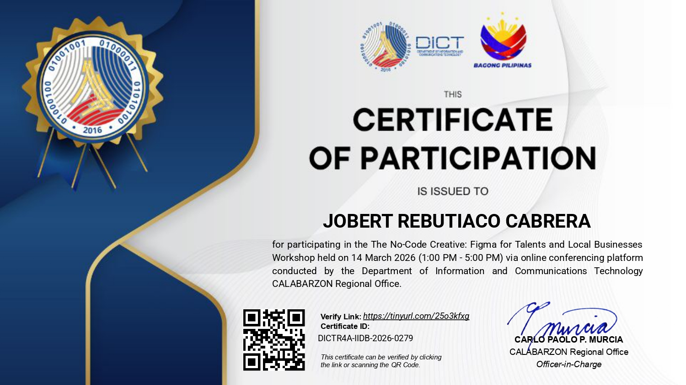

Expected graduation: 2028
Bachelor of Science in Information Technology
City College of Calamba
Focus areas
- Graphic design & layout
- UI/UX fundamentals
- Digital illustration
Graphic Designer · Calamba, Philippines
Clean layouts, strong typography, and visuals that tell a story.
Hi, I'm Jobert. I'm a graphic designer who loves bringing ideas to life, from brand identities and posters to digital marketing graphics. Welcome to my portfolio.
About
I'm Jobert R. Cabrera, a graphic designer focused on building clear, expressive visuals for brands and digital experiences. I love turning ideas into polished layouts and strong typography.
My work so far covers a personal brand identity (JC x Silver), a digital marketing campaign (Brew Haven), a typography-only poster (UNBOUND) and a traditional illustration study (Orange Slice).
When I'm not designing, you can find me playing basketball, running, reading comics, playing board games, or exploring personal style and fashion.
Skills
My own honest self-assessment: no percentages, just where I feel I stand.
Design and digital skills I use in my projects.
How I like to work.
Everything below was used in the work on my projects.
Experience
2025 – 2026
Self-employed · Philippines
Projects
Search by name, tool, category, year or type, and combine filters to narrow things down.
Try a different word or remove a filter.
Education & credentials
Expected graduation: 2028
City College of Calamba
2026
Department of Information and Communications Technology

Curriculum vitae
The latest version, in PDF format.
Graphic Designer
My CV is not available to download right now. Please contact me and I will send it to you.
Contact
Have a project in mind? Send me a message and I will reply by email.